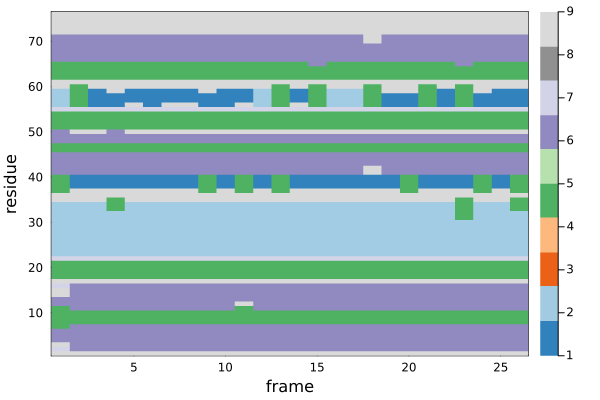
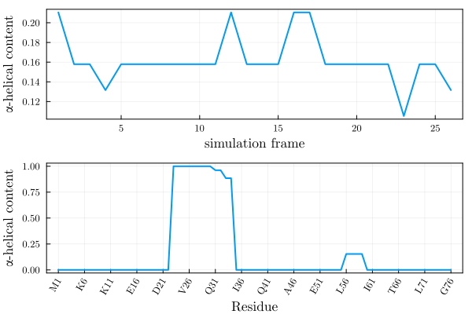

Molecular Dynamics Trajectories
This package provides convenience functions to analyze the secondary structure along molecular dynamics simulations. The user must provide a PDB file of the system simulated and a trajectory file, which may be of one of the most common formats, as supported by Chemfiles.
Secondary structure map
The secondary structure map is the profile of the secondary structure computed for each frame of the trajectory. This computation may be costly, particularly with the DSSP algorithm, so it is recommeded to save the result. See Saving and loading a map for further information.
A complete example for computing a secondary structure map is shown below:
using ProteinSecondaryStructures
using PDBTools: readPDB
using Chemfiles: Trajectory
pdbfile = ProteinSecondaryStructures.Testing.data_dir*"/Gromacs/system.pdb"
trajectory_file = ProteinSecondaryStructures.Testing.data_dir*"/Gromacs/trajectory.xtc"
atoms = readPDB(pdbfile, "protein")
trajectory = Trajectory(trajectory_file)
ssmap = ss_map(atoms, trajectory) # returns a Matrix{Int}In the example, we loaded a Gromacs xtc trajectory. The method used to compute the secondary structure can be selected with the method keyword parameter, which defaults to stride:
ssmap = ss_map(atoms, trajectory; method=stride_run)
ssmap = ss_map(atoms, trajectory; method=dssp_run)Importantly, note that we have selected the "protein" atoms when reading the PDB file of the trajectory. This is important, both to avoid unnecessary reading and writting of coordiantes which are of no interest, and to guarantee that the algorithm for computing secondary structure will not fail.
This will create a matrix that can be visualized, for instance, with:
using Plots
heatmap(ssmap,
xlabel="frame",
ylabel="residue",
framestyle=:box,
color=palette(:tab20c,10)
)producing the figure:

where the colors refer to the code number fields of the Secondary structure classes table.
Saving and loading a map
The secondary structure map computed is just a matrix of integer codes. Thus, it can be saved or read in any preferred format. As a suggestion, it is possible to use writedlm and readdlm function from the DelimitedFiles package:
using DelimitedFiles
# save data to ssmap.dat
writedlm("ssmap.dat", ssmap)
# load data
ssmat = readdlm("ssmap.dat", Int)Secondary structure classes
From a precomputed secondary structure map, or from a trajectory, helper functions will provide the content of a specific call of secondary structure along the simulation:
From the secondary structure map
Calling ss_content with a class identifier function and a map (as computed above), will return the content of that class along the trajectory:
julia> ss_content(is_alphahelix, ssmap)
26-element Vector{Float64}:
0.21052631578947367
0.15789473684210525
⋮
0.13157894736842105The composition of classes for a given frame can also be retrieved from the content map:
julia> ss_composition(ssmap, 6)
Dict{String, Int64} with 10 entries:
"310 helix" => 7
"bend" => 0
"turn" => 17
"kappa helix" => 0
"beta strand" => 25
"beta bridge" => 2
"alpha helix" => 12
"pi helix" => 0
"loop" => 0
"coil" => 13These functions are useful, because the computation of the secondary structure along the trajectory (the map) can be costly.
Single class, througout the trajectory
If the user wants to compute the content of a single class of secondary structures along a trajectory, that can be done without precomputing the secondary structure map (note, however, that the cost is similar).
For example, in the following script we compute the content of $\alpha$-helices of the structure along the trajectory:
using ProteinSecondaryStructures
using PDBTools: readPDB
using Chemfiles: Trajectory
pdbfile = ProteinSecondaryStructures.Testing.data_dir*"/Gromacs/system.pdb"
trajectory_file = ProteinSecondaryStructures.Testing.data_dir*"/Gromacs/trajectory.xtc"
atoms = readPDB(pdbfile, "protein")
trajectory = Trajectory(trajectory_file)
helical_content = ss_content(is_alphahelix, atoms, trajectory)The method to compute the secondary structure can be defined with the method keyword:
helical_content = ss_content(is_alphahelix, atoms, trajectory; method=stride_run)
#or
helical_content = ss_content(is_alphahelix, atoms, trajectory; method=dssp_run)Average structure per residue
Here we provide a example where we use some features of PDBTools.jl and Plots to illustrate the average content of $\alpha$-helices for each residue of the protein, along the simulation.
Here, we assume that a secondary structure map, ssmap, was computed using the instructions above.
The goal is to obtain a figure similar to this one, in which in the upper pannel we show the evolution of the total $\alpha$-helical content as a function of the simulation frames, and in the lower pannel we show the content of helices of each residue, with appropriate indexing.

The script to produce the figure above is a manipulation of the ssmap output, using function from PDBTools and the plotting features of Plots. THe complete script is:
using Plots, PDBTools
Plots.default(fontfamily="Computer Modern",linewidth=2,framestyle=:box)
plt = plot(layout=(2,1))
ahelix = ss_content(is_alphahelix, ssmap)
plot!(plt, subplot=1,
ahelix, label=nothing,
xlabel="simulation frame",
ylabel="α-helical content"
)
residue_indexes=1:length(eachresidue(atoms))
one_letter_names = eachresidue(atoms) .|> resname .|> oneletter;
string_numbers = eachresidue(atoms) .|> resnum .|> string;
xlabels = one_letter_names .* string_numbers
ahelix_avg = map(mean, eachrow(is_alphahelix.(ssmap)))
xticks=(residue_indexes[begin:5:end],xlabels[begin:5:end])
plot!(plt, subplot=2,
residue_indexes,
ahelix_avg,
label=nothing,
xlabel="Residue",
ylabel="α-helical content",
xticks=xticks, xrotation=60
)
savefig("./helical_content.svg")Step-by-step construction of the figure
First, we load the Plots and PDBTools packages, and set some default parameters for Plots for prettier output.
julia> using Plots, PDBTools
julia> Plots.default(fontfamily="Computer Modern",linewidth=2,framestyle=:box)We then initialize a plot with two pannels. The upper supblot will contain the $\alpha$-helical content as a function simulation frames, and the lower subplot will contain the average content of helices for each residue.
julia> plt = plot(layout=(2,1))Next, we compute, from the secondary structure map, the $\alpha$-helical content, for each frame of the trajectory, which will be printed in the first subplot of the figure:
julia> ahelix = ss_content(is_alphahelix, ssmap)
julia> plot!(plt, subplot=1,
ahelix, label=nothing,
xlabel="simulation frame",
ylabel="α-helical content"
)For the second plot, we first define a residue range, with the number of residues of the protein, using PDBTools.eachresidue iterator. Here, length(eachresidue(atoms)) is just the number of residues of the protein:
julia> residue_indexes=1:length(eachresidue(atoms))
1:76We the extract the names of all residues, which we will use for creating the x-labels of our plot. We iterate over all residues first to extract their names, which are converted to one-letter codes, and these are concateneted (with the * operation on strings), with the residue numbers converted to strings:
julia> one_letter_names = eachresidue(atoms) .|> resname .|> oneletter;
julia> string_numbers = eachresidue(atoms) .|> resnum .|> string;
julia> xlabels = one_letter_names .* string_numbers
76-element Vector{String}:
"M1"
"Q2"
⋮
"G76"The y-axis of our plot will contain the average $\alpha$-helical content for each residue. To extract that, we will first convert the ssmap to matrix of 0s and 1s, with the broadcast of the is_alphahelix function:
julia> is_alphahelix.(ssmap)
76×26 BitMatrix:
0 0 0 0 0 0 0 0 0 0 0 0 0 0 0 0 0 0 0 0 0 0 0 0 0 0
0 0 0 0 0 0 0 0 0 0 0 0 0 0 0 0 0 0 0 0 0 0 0 0 0 0
⋮ ⋮ ⋮ ⋮ ⋮ ⋮
0 0 0 0 0 0 0 0 0 0 0 0 0 0 0 0 0 0 0 0 0 0 0 0 0 0The average of each row is the the average content of helices for each residue:
julia> ahelix_avg = map(mean, eachrow(is_alphahelix.(ssmap)))
76-element Vector{Float64}:
0.0
0.0
⋮
0.0We can finally plot the second supblot of our figure, with the note that we have filtered some x-tick labels to avoid having a crowded axis:
julia> plot!(plt, subplot=2,
residue_indexes,
ahelix_avg,
label=nothing,
xlabel="Residue",
ylabel="α-helical content",
xticks=(residue_indexes[begin:5:end], xlabels[begin:5:end]),
xrotation=60,
)
julia> savefig("./helical_content.svg")The final line saves the figure to an external file.